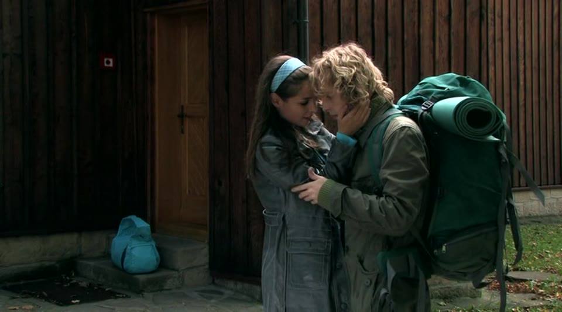

营地：旁白说到了，画面却剪掉了
裁判指出：旁白描述把手机卡投入火中、划掉名字并烧纸，同期成片却主要停在拆手机后盖，关键动作没有呈现。轨迹显示模型曾按1秒间隔查看这一场景，问题出在最终选镜与剪辑。
把一部93分钟的电影，剪成新观众能看懂的8–12分钟中文解说。故事要讲清，人物要指对，关键动作也必须真正出现在画面里。

输入是英语独立电影《Valkaama》的完整音视频。任务面向没看过原片的观众，允许剧透；需要整合交错人物线、解释角色在各阶段掌握的信息，并用影片真实画面、原声与中文旁白完成一部可直接观看的剧情解说。
原片全长5593.6秒。可使用ASR、抽帧、OCR、镜头切分、FFmpeg及TTS，允许联网和安装其他工具。
电影理解、写稿、选镜与剪辑由被测模型完成；主测试不提供外部剧情分析模型。
8–12分钟中文解说MP4，含旁白、中文字幕和至少3处原片叙事原声留白；另交文稿、SRT字幕、源片镜头映射和制作／署名说明。
关键剧情与动作必须有对应画面；一般背景交代允许合理蒙太奇与过场。
叙事与事实40分、选材与声画一致性35分、成片视听体验25分。先对静音且遮去底部字幕的成片做视觉记录，再逐段核对旁白与同期画面，另核查源片映射和完整观看体验。
格式不另加分。无可播放有效成片为0分；时长超出470–730秒、无法提供可读中文、缺文稿或有效镜头映射等严重交付缺陷，总分最高60分。常规编码差异与等价字段正常接受。本次交付未触发封顶。
| 被测模型 | 思考强度 | 实际耗时 | 交付状态 | 总分 |
|---|---|---|---|---|
| gpt-6.2-astra | xhigh | 31分56.9秒 | 完整交付 · 正常退出 | 79.5023 / 100 |
16项剧情核查：12项充分成立，3项部分成立，1项失败。
源片定位10.00 / 10；逐段声画一致性22.42 / 25。
原声编排较完整；配音表现力、视觉韵律各得1.67 / 5。
| 核查项 | 裁判结论与成片定位 | 得分 |
|---|---|---|
| C01 充分成立 | 告别邮件与厨房争执 成片0.0-16.0s完整展示露娜打开笔记本阅读拉塞发出的重逢返乡邮件及桌面“HOMECOMING”便签；16.0-33.5s交代麦克斯是露娜的弟弟；33.5-43.5s展现厨房里拉塞猜到她看过信并挑明几天后离开，露娜激动质问，核心事实完整且无陷阱。 | 2.50 / 2.5 |
| C02 充分成立 | 针织玩偶托付Max与独自伤怀 43.5-66.5s完整呈现拉塞临走将随身针织玩偶留给麦克斯、保留露娜英文原声直言“麦克斯不需要玩偶，他需要你”、拉塞亲吻道别背登山包离开，以及关门后露娜将玩偶紧贴脸边独自伤怀。 | 2.50 / 2.5 |
| C03 部分成立 | 五年游历书信与轮椅同伴Ari的回家之约 交代了拉塞游历约五年、不断写信给坐轮椅无法远行的密友阿里并相约北上回瓦尔卡玛的主干，但66.5-75.0s旁白将“把信寄往哥德堡”误述为拉塞自己“隔一阵会回哥德堡”，且遗漏不拍照的细节。 | 1.25 / 2.5 |
| C04 充分成立 | Magnus的现实挫败与Lazarus网聊约见 90.8-111.8s展示了马格努斯在阁楼遭酗酒母亲羞辱一事无成及父亲弃家的压抑现实，以及他在电脑前以Lazarus之名通过ICQ与网名Soulwalker的阿里约定日落时分相见解脱。 | 2.50 / 2.5 |
| C05 充分成立 | Ari绝望求死与公寓钥匙遗留物托付 111.8-150.0s清楚交代黄昏轮椅上的阿里因最大心愿无法实现且缺乏陪伴而决意终结生命，在向马格努斯确认不会疼后，亲手交出公寓钥匙并嘱咐去屋里画和照片之间取留给他的东西。 | 2.50 / 2.5 |
| C06 充分成立 | 黄盖小瓶饮尽致死与持黑色小册画十字 146.8-171.5s声画同步展示了马格努斯递出黄盖小瓶、阿里仰头喝下后在轮椅上后仰瘫倒死亡，以及马格努斯手持黑色小册子在胸前画十字，未踩入任何混淆陷阱。 | 2.50 / 2.5 |
| C07 充分成立 | 孤儿院寻人与手写记下Ari及哥德堡线索 171.5-202.5s准确呈现露娜前往孤儿院查找拉塞，前台职员虽拒绝透露住址但在她临走时告知拉塞唯一密友信息，随后特写露娜在黄色便利贴上手写记下阿里·基尔瓦与哥德堡。 | 2.50 / 2.5 |
| C08 充分成立 | 哥德堡邻居告知死讯与约夜里撬门 202.5-225.0s展示了露娜赶到哥德堡按门铃，年轻男邻居请她进屋并原声告知阿里已自我终结离世，露娜表示想进公寓找线索，邻居答应等天黑楼梯没人时帮忙开门。 | 2.50 / 2.5 |
| C09 充分成立 | 公寓同夜同室躲藏与Lazarus信件被取走 225.0-282.8s准确呈现夜间男邻居撬锁带露娜摸黑进屋、听见开门声躲到厨房吧台后、马格努斯用钥匙进门开灯（三人同室）、拿走火柴盒与照片墙上写着Lazarus的折纸信件（疑惑怎知真名）后离开，随后两人现身翻找无果的全过程。 | 2.50 / 2.5 |
| C10 充分成立 | 湖边冒充密友与火车双谎蒙蔽Lasse 282.8-321.0s完整交代马格努斯在湖边主动认出拉塞并自称阿里密友，先谎称阿里几天前已先行出发去终点等候并请拉塞带路，上火车后又编造阿里与网上认识的女子坐车同行，不知死讯的拉塞信以为真并替朋友高兴。 | 2.50 / 2.5 |
| C11 失败 | Valkaama理想自述与酒馆挑衅‘瑞典耶稣’ 357.0-375.0s旁白明确声称餐馆冲突时“拉塞回来劝阻”，而实际画面与原片事实均为拉塞仅在门口停步沉默观望、并未上前劝架，直接踩中把沉默旁观误说成主动出面劝阻的事实陷阱。 | 0.00 / 2.5 |
| C12 部分成立 | 营地丢信烧手机卡与公用电话亭求助Runa 409.0-450.0s完整保留了拉塞离开营地在路边公用电话亭致电露娜求助并约在芬兰伊纳里教堂见面的情节；但385.0-409.0s营地火堆戏出现严重画面缺失，仅拍到抠手机后盖，旁白所述的把卡投进火里、划掉名字、烧纸及嗅吻金发等关键画面全部剪丢。 | 1.25 / 2.5 |
| C13 充分成立 | Inari重逢时的双向知情与执意进林 444.0-490.0s完整交代露娜托人照看弟弟后飞赴北方重逢，拉塞先沉重说出阿里已死，露娜平静回应早从报上得知且去过孤儿院找他；拉塞仍坚称当年留在孤儿院是等父亲建好社区，执意带露娜继续进林查看。 | 2.50 / 2.5 |
| C14 充分成立 | 红砖废墟与Teemu对弱者及轮椅Ari的排斥 490.0-538.5s展示了两人穿过树林只见到破败无顶的红砖墙废墟，次日自称蒂穆的父亲现身与露娜对峙，断言露娜太软弱且坐轮椅的阿里不配成为他们一员，遭露娜当面痛斥。 | 2.50 / 2.5 |
| C15 部分成立 | 坡地罪责对质、Teemu喊‘你不存在’拔刀扑倒与公寓指认 准确呈现了坡地拉塞指控马格努斯是凶手、马格努斯反指拉塞抛弃阿里、两人先后向走来的蒂穆喊父亲、蒂穆原声嘶吼“No! No! You don't exist!”、冲向马格努斯被推倒在地不动及露娜赶到指认公寓照面等核心主干；但575.8-584.8s旁白称“蒂穆拔了刀”，成片实际画面中完全看不见拔刀动作或刀具。 | 1.25 / 2.5 |
| C16 充分成立 | 湖畔幻灭归家与Magnus静坐留守（无药瓶幻觉） 600.0-648.5s准确交代拉塞承认瓦尔卡玛“什么也没有”并在露娜搀扶下一起回家，马格努斯原声表示不想回去，盘腿静坐在草地（手中仅有一朵小黄花，无任何掏药瓶或服毒的幻觉编造）直至叠化入湖面淡出。 | 2.50 / 2.5 |
| 维度 | 档位 | 得分 | 裁判理由 |
|---|---|---|---|
| P1 · 叙事钩子与多线悬念编排 | 3 / 4档 | 3.3333 / 5 | 开篇0-16s以偷看邮件与“归家”便签建立悬念，露娜寻人、阿里求死与拉塞北上三线交织推进流畅，584s处人物汇合收束自然。 |
| P2 · 解说词写作质量与译名统一 | 3 / 4档 | 3.3333 / 5 | 人物与地名译法统一，文风克制有余韵；但存在67s“回哥德堡”及365s“拉塞劝阻”等局部背离原片事实的表述瑕疵。 |
| P3 · 至少3处叙事原声留白与声部作用 | 3 / 4档 | 3.3333 / 5 | 全片保留11处干净原声留白（如52.5s道别、211.8s死讯、427.0s电话求助、546.8s对峙），声部切换自然，有效强化情绪高潮。 |
| P4 · 中文配音表现力与背景音闪避干净度 | 2 / 4档 | 1.6667 / 5 | 背景音乐与原声闪避干净无顶撞，但中文旁白为典型AI合成音色，语调平直缺乏情绪起伏，削弱了艺术片感染力。 |
| P5 · 视觉剪辑韵律、动势衔接与双层字幕呈现 | 2 / 4档 | 1.6667 / 5 | 章节边框与声源标注清晰，多数镜头同步良好，但395s营地断联、575.8s冲突等段落剪丢关键动作与道具，存在局部声画脱节。 |
每项满分5分，四档分别对应0、1/3、2/3、满分；3档表示合格顺畅的常规水准。
原生Windows Codex CLI 0.163.0；NJU Link；正常联网；无执行时长、工具次数或帧数预算。59次模型API请求，实际model=gpt-6.2-astra、reasoning effort=xhigh；exit_code=0，turn.completed=true。
求解时间：2026-11-19 18:51:47至19:23:44（UTC+8）。裁判：Gemini 4 Carbon；评分版本 commentary-v10-carbon-debiased-c40-s35-p25-cap60。网页转码只用于展示，评分针对原始交付。
模型先读取任务与含16项剧情清单的评分说明，按10秒步长抽取全片接触表，再结合本地英语ASR对邮件、电脑聊天、公寓躲藏、营地及坡地冲突加密抽帧。随后分六章编写中文旁白，使用Ethan合成语音并对齐字幕，建立25帧时间轴，完成原声留白、混音、编码和最终解码检查。交付后裁判仍指出数处事实误述及关键动作剪丢。
本次分数的主要差距来自具体事实、关键动作选镜和视听表现。模型已定位到多数核心场景，但“选到这一场戏”与“剪出足以支撑旁白的动作”之间仍有距离。以下按原始裁判结论提供可回看的证据。
点选问题会同时定位两条时间轴；播放器独立播放，开始一侧时会暂停另一侧，便于分别核对原声与解说。
裁判指出：旁白描述把手机卡投入火中、划掉名字并烧纸，同期成片却主要停在拆手机后盖，关键动作没有呈现。轨迹显示模型曾按1秒间隔查看这一场景，问题出在最终选镜与剪辑。
裁判指出：旁白描述把手机卡投入火中、划掉名字并烧纸，同期成片却主要停在拆手机后盖，关键动作没有呈现。轨迹显示模型曾按1秒间隔查看这一场景，问题出在最终选镜与剪辑。
裁判指出：解说说“拉塞回来劝阻”，原片与成片中他却只在门口停步旁观。人物出现在正确场景，仍不足以支撑旁白所说的具体行动。
裁判指出：旁白说“蒂穆拔了刀”，所选远景却没有让观众看清拔刀或刀具。冲撞结局剪进了成片，促成冲突的关键动作仍未得到对应画面支持。
裁判指出：拉塞向哥德堡的阿里寄信分享游历，被解说写成自己“隔一阵会回哥德堡”；同段还有人物入镜滞后。人物关系主干成立，具体旅行行为仍被讲错。
裁判认为原声与旁白闪避较干净，原声留白能推动叙事；但Ethan合成旁白语调偏平，情绪变化不足。配音／混音和视觉剪辑两项均评为2档，各得1.6667 / 5。可直接播放成片试听，并与上方逐项制作判票对照。